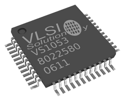

Codec
VS1053B

This codec takes a SPI stream of audio, like MP3, and decodes it to an audio output.
Tip
Needed NuGet: GHIElectronics.TinyCLR.Drivers.VlsiSolution.VS1053B
This example plays a small MP3 from a resource. Similarly, large file data can be fetched from other external resources.
//SC13048 Dev Board
var gpio = GpioController.GetDefault();
var dreq = gpio.OpenPin(SC13048.GpioPin.PA4);
var reset = gpio.OpenPin(SC13048.GpioPin.PB15);
var dataChipSelect = gpio.OpenPin(SC13048.GpioPin.PA0);
var commandChipSelect = gpio.OpenPin(SC13048.GpioPin.PB2);
var spi = SpiController.FromName(SC13048.SpiBus.Spi1);
mp3decoder = new VS1053BController(spi, dreq, reset, dataChipSelect, commandChipSelect);
var mp3Bytes = Resources.GetBytes(Resource1.BinaryResources.Song);
mp3decoder.SetVolume(250, 250);
mp3decoder.SendData(mp3Bytes);
WAV Audio
This code plays an 8 bit mono WAV file with a sample rate of 8 kHz. The WAV file must be saved as a .BIN file before adding it as a resource. The audio is output to pin PA4 on the SC20100S Dev Board.
Tip
Needed NuGet: GHIElectronics.TinyCLR.Drivers.Media
var dac = DacController.GetDefault();
var analogOut = dac.OpenChannel(SC20100.DacChannel.PA4);
var byteFile = Resources.GetBytes
(Resources.BinaryResources.yourWavFileResource);
var wavFile = new Wav(byteFile);
var dataIndex = wavFile.GetDataIndex();
var size = wavFile.GetDataSize();
var sampleRate = wavFile.GetSampleRate();
if (sampleRate == 8000) {
for (int i = dataIndex; i < size; i++) {
analogOut.WriteValue(byteFile[i]);
for (int timer = 0; timer < 58; timer++) {}
}
}
else {
Debug.WriteLine("Sorry, file does not have an 8 kHz sample rate.");
}
MJPEG Video
The MJPEG video format is simply a chain of JPG images that are stored in a single file. The following code sample demonstrates the use of the driver.
Tip
Needed NuGet: GHIElectronics.TinyCLR.Drivers.Media
var stream = new FileStream($@"A:\128x160.mjpeg", FileMode.Open);
var settings = new Mjpeg.Setting();
settings.BufferSize = 16 * 1024;
settings.BufferCount = 3;
var mjpegDecoder = new Mjpeg(settings);
mjpegDecoder.FrameDecodedEvent += MjpegDecoder_FrameDecodedEvent;
mjpegDecoder.StartDecode(stream); // Non-block function
Thread.Sleep(Timeout.Infinite);
private static void MjpegDecoder_FrameDecodedEvent(byte[] data) {
using (var image = new Bitmap(data, 0, data.Length,BitmapImageType.Jpeg)){
if (graphic != null){
graphic.DrawImage(image, 0, 0, image.Width, image.Height);
graphic.Flush();
}
}
GC.WaitForPendingFinalizers();// helps in clearing out the RAM
}